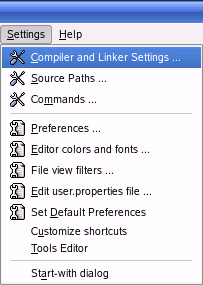

Setting up SDL Extensions in Anjuta
Last Updated 12/09/07
1)
Open up your SDL project go to the compiler and linker settings:
2)Under the libraries tab, add in:
If you were linking SDL_ttf you'd put
3)To use SDL_image make sure to include the header file.

2)Under the libraries tab, add in:
SDL_image
If you were linking SDL_ttf you'd put
SDL_ttf
If you were linking SDL_mixer you'd putSDL_mixer
etc, etc.3)To use SDL_image make sure to include the header file.
#include "SDL/SDL_image.h"
If you were setting up SDL_ttf you'd put
Now the extension library is all set up.
#include "SDL/SDL_ttf.h"
If you were setting up SDL_mixer you'd put#include "SDL/SDL_mixer.h"
etc, etc.Now the extension library is all set up.
Now you can use SDL_image functions.
The main one you want to know about is IMG_Load().
The main one you want to know about is IMG_Load().
SDL_Surface *load_image( std::string filename )
{
//The image that's loaded
SDL_Surface* loadedImage = NULL;
//The optimized image that will be used
SDL_Surface* optimizedImage = NULL;
//Load the image using SDL_image
loadedImage = IMG_Load( filename.c_str() );
//If the image loaded
if( loadedImage != NULL )
{
//Create an optimized image
optimizedImage = SDL_DisplayFormat( loadedImage );
//Free the old image
SDL_FreeSurface( loadedImage );
}
//Return the optimized image
return optimizedImage;
}
Here is a revised version of the image loading function from the previous tutorial.
As you can see IMG_Load() functions exactly the same as SDL_LoadBMP(), but there's one big exception: IMG_Load() can load BMP, PNM, XPM, LBM, PCX, GIF, JPEG, TGA and PNG files.
From this tutorial on, PNG image files will be the primary image format used. PNGs have excellent lossless compression.
As you can see IMG_Load() functions exactly the same as SDL_LoadBMP(), but there's one big exception: IMG_Load() can load BMP, PNM, XPM, LBM, PCX, GIF, JPEG, TGA and PNG files.
From this tutorial on, PNG image files will be the primary image format used. PNGs have excellent lossless compression.